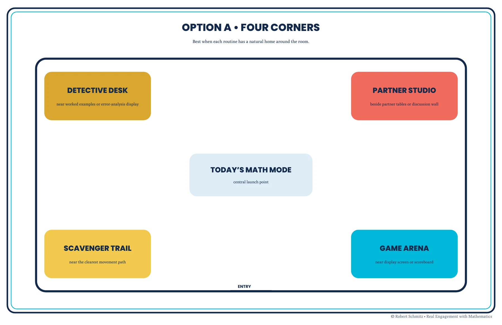
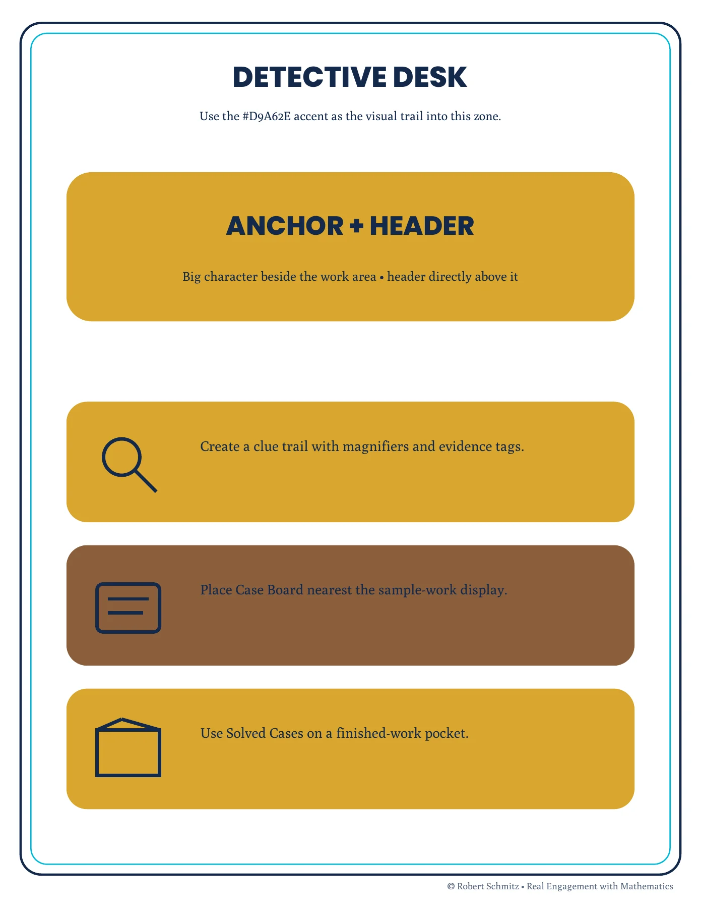
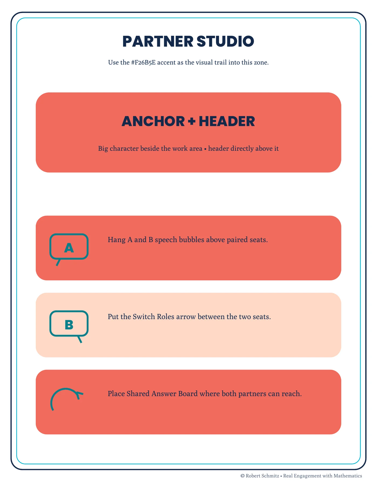

Implementation design · Facilitator support
Design the handoff to the classroom.
Room layouts and routine guides that help an instructor turn coordinated materials into usable learning spaces.
Inspect the materials ↓Help the next person put the system to work
A collection of classroom graphics still needs an implementation plan. Scribble Math Headquarters connects four activity zones with placement guidance, routine signs, and facilitator instructions.
The selected guide offers four-corner, one-wall, and small-room arrangements. This sample focuses on the room plan and two zones that make different learner routines visible.
From room plan to routine
Place the activity, then support the action.
{kind=link}

{kind=link}

{kind=link}

The design decisions
Make the destination recognizable
A header, character, and repeated visual theme identify each zone. Placement guidance explains how the elements work together.
Keep the routine usable
Routine words and reachable tools connect the graphics to an activity. Editable text companions allow labels to be adapted; the public excerpts show the placement guide.
Evidence and next evaluation
This is an authored classroom implementation system. The images are guide excerpts, not photographs of a completed installation or evidence of classroom adoption.
Next evaluation: have an instructor use the guide to plan a real room, record unclear placement decisions, and check whether learners can locate a zone and explain its routine. Local installation and accessibility requirements should inform that review.